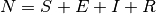

Generic 3: SIER - Incubation periods¶
This tutorial assumes that you have read Generic 1: SIR - Simple single-node outbreak and Generic 2: SIR - Targeted vaccination campaigns.
The SIR model in Generic 1: SIR - Simple single-node outbreak has several limitations that might not be true
for some diseases. Many diseases have a latent phase during which the individual is infected but not
yet infectious. This delay between the acquisition of infection and the infectious state can be
incorporated within the existing model by adding a latent/exposed population, E, and letting
infected (but not yet infectious) individuals move from S to E and from E to I. If  is the rate of
latent individuals becoming infectious (average duration of latency is 1/), the SEIR model becomes:
is the rate of
latent individuals becoming infectious (average duration of latency is 1/), the SEIR model becomes:

with 
Since the latency delays the start of the individual’s infectious period, the secondary spread from
an infected individual will occur at a later time compared with an SIR model which has no latency.
Therefore, including a longer latency period will result in slower initial growth of the outbreak.
However, since the model does not include mortality, the basic reproductive number,
R0 =  , does not change.
, does not change.
Demographics inputs¶
This tutorial uses generic_scenarios_demographics file for demographics input, as do all of the generic simulation scenarios except for Generic 2: SIR - Targeted vaccination campaigns, and Generic 10: Animal reservoir zoonosis. You can view the complete demographics file at <path_to_directory>ScenariosInputFiles where <path_to_directory> is the location where you installed the Quick Start. For more information on demographics files, see Demographics file structure and parameters.
Key configuration parameters¶
This tutorial uses the config.json in <path_to_directory>ScenariosGeneric Scenarios03_SEIR directory.
Demographics parameters¶
Set Enable_Vital_Dyanamics to 0. This will disable vital dynamics (birth and death) in the simulation. For more information, see Demographics parameters.
SEIR model setup parameters¶
The incubation period, infection period, and immunity must be enabled for an SEIR model. Immunity waning must be disabled. For more information, see General disease parameters.
Set the following parameters:
- Set Base_Incubation_Period to 8.
- Set Enable_Immunity to 1.
- Set Enable_Immune_Decay to 0.
- Set Incubation_Period_Distribution to “EXPONENTIAL_DISTRIBUTION.”
Disease parameters¶
In the following example, we still use the same parameters as in the SIR model: the average infectious duration is 4 days; and R0 = 14 (measles-like). However, this time we will add a latent period of 8 days. For more information, see General disease parameters.
Set the following parameters:
- Set Base_Infectivity to 3.5.
- Set Base_Infectious_Period to 4.
- Set Infectious_Period_Distribution to “EXPONENTIAL_DURATION.”
Time step and duration parameters¶
For more information, see Simulation setup parameters. Set the following parameters:
- Set Simulation_Timestep to 1.
- Set Simulation_Duration to 90.
Interventions¶
This tutorial uses the campaign.json file in the <path_to_directory>ScenariosGeneric Scenarios03_SEIR directory.
Initial outbreak¶
This simulation uses an OutbreakIndividual event at day 1 to create the initial seeding. For more information, see OutbreakIndividual parameters.
{
"Use_Defaults": 1,
"Campaign_Name": "Initial Seeding",
"Events": [{
"Event_Coordinator_Config": {
"Intervention_Config": {
"Antigen": 0,
"Genome": 0,
"Outbreak_Source": "PrevalenceIncrease",
"class": "OutbreakIndividual"
},
"Target_Demographic": "Everyone",
"Demographic_Coverage": 0.0005,
"class": "StandardInterventionDistributionEventCoordinator"
},
"Event_Name": "Outbreak",
"Nodeset_Config": {
"class": "NodeSetAll"
},
"Start_Day": 1,
"class": "CampaignEvent"
}]
}
Run the simulation¶
Run the simulation and generate graphs of the simulation output. For more information, see How to run Quick Start simulations.
Note
Because the EMOD model is stochastic, your graphs may appear slightly different from those given below.
Simulation output graphs¶
The complete course of outbreak is observed. After the initial fast growth, the epidemic depletes the susceptible population. Eventually the virus cannot find enough new susceptible people and dies out.
Although R0and the cumulative number of infected individuals does not change, including latency slows down the growth of the epidemic.

Figure 1: Depletion of the susceptible population
Exploring the model¶
Change the latent period to observe the initial growth. The following figure shows the results of changing to a shorter latent period (2 days).

Figure 2: Impact of the length of the latent period